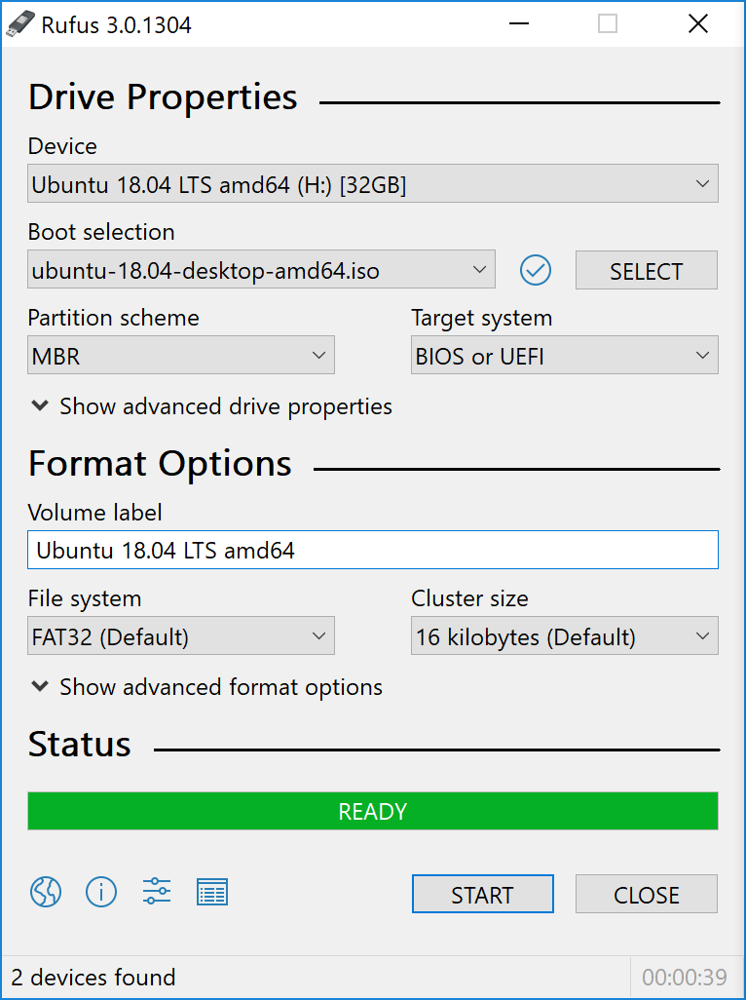
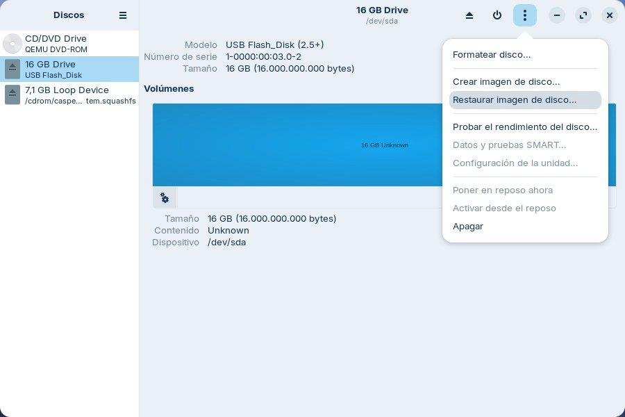
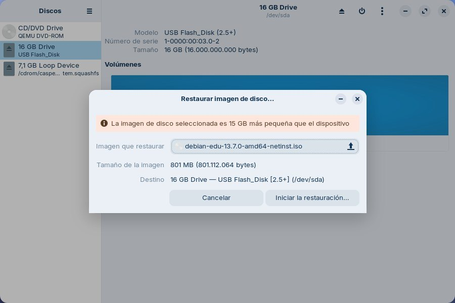

Una actividad para el aula
En muchas familias es el alumnado quien enseña a las personas adultas a usar la tecnología. La escuela es, por lo tanto, un buen lugar para enseñar la instalación de nuevos sistemas operativos y la búsqueda de software libre, así como para concienciar de la importancia de la privacidad y el uso del software libre.
A continuación se explica cómo instalar un sistema operativo mediante una memoria USB de arranque. Se incluyen dos posibilidades, la primera utilizando un ordenador con Windows y la segunda con Linux.
Destinatarios: ESO y Bachillerato. Duración: una o dos sesiones. Agrupamiento: por parejas. Evaluación: comprobación de que el ordenador arranca con el sistema instalado y lista de cotejo de los pasos seguidos.
La distribución que conviene grabar en la memoria depende del ordenador donde vaya a instalarse. En «Distribuciones y escritorios para el centro» aparecen ordenadas de mayor a menor potencia requerida, y en «Dar una segunda vida a los ordenadores» se explica qué conviene comprobar en los equipos antiguos antes de instalar.
Crear un USB de arranque
En este primer paso se prepara la memoria USB de arranque. Hay dos formas de hacerlo, desde Windows o desde Linux, y las dos se explican a continuación.
Desde Windows
Para preparar la memoria desde un sistema con Windows hace falta lo siguiente:
- Un ordenador con Windows, desde el que se graba la memoria USB con el nuevo sistema operativo.
- Un ordenador antiguo sobre el que instalar ese sistema.
- Una memoria USB de 8 GB o más. Las imágenes de las distribuciones más completas superan hoy los 6 GB, así que las memorias de 4 GB se han quedado cortas.
- El programa Rufus, que es software libre y tiene una versión portable, sin instalación.
- La imagen ISO del sistema operativo, que se descarga de su página web.


Basta con elegir la unidad USB donde se va a grabar, seleccionar la imagen ISO e iniciar el proceso. El resto de las opciones pueden dejarse como las propone el programa. Conviene asegurarse de que la unidad elegida es la memoria USB, porque su contenido se borra por completo.
En el vídeo Cómo crear un USB booteable se explica el proceso en detalle.
Desde Linux
En Linux puede utilizarse un programa que viene incluido en muchas distribuciones y que reúne las utilidades para las unidades de almacenamiento. Aparece con el nombre Discos (Disks en inglés, o gnome-disks desde un terminal). Si no está instalado, se añade desde el gestor de programas de la distribución o, en las basadas en Debian, con la orden sudo apt install gnome-disk-utility en un terminal. Permite grabar cualquier imagen ISO en una memoria USB.
Requisitos:
- Un ordenador con Linux, desde el que se graba la memoria USB con el nuevo sistema operativo
- Un ordenador antiguo sobre el que instalar ese sistema
- Una memoria USB de 8 GB o más
- El programa Discos (gnome-disks)
- La imagen ISO, que se descarga de la página web del sistema operativo
Para grabar la memoria:
- Se abre el programa y se selecciona, en la lista de dispositivos, la unidad donde se va a escribir la imagen
- En el menú del programa se elige la opción para restaurar una imagen de disco


Después se indica dónde está la imagen ISO en el ordenador.
- Por último se inicia la copia. Al terminar, el ordenador ya puede arrancarse con esa memoria USB.


Los dos procedimientos anteriores dejan la memoria USB preparada con un solo sistema operativo, y hay que volver a grabarla entera para cambiarlo. Existe otra forma de trabajar que resulta más cómoda en un centro, donde se suelen probar varias distribuciones. El programa Ventoy, publicado con licencia GPL, prepara la memoria una sola vez; después basta con copiar en ella los archivos ISO que se quieran, como si fueran documentos. Al arrancar el ordenador aparece un menú con todos los sistemas copiados y se elige uno.
Arrancar e instalar desde el USB
Una vez preparada la memoria USB con el sistema operativo, queda arrancar el ordenador donde va a instalarse. Hay que conseguir que se inicie desde la memoria USB y no desde el disco duro, como es habitual.
La forma de hacerlo depende de cada ordenador. Muchos indican durante el arranque, y durante unos segundos, la tecla que hay que pulsar para elegir desde dónde se inicia el equipo, o la que da acceso a la configuración de la BIOS para cambiar el orden de arranque. Suelen ser teclas de función, aunque cambian según el fabricante. En el artículo Cómo arrancar tu ordenador desde un CD o USB se recogen las más habituales y las dos maneras de hacerlo.
En los ordenadores relativamente recientes puede aparecer otra dificultad. Llevan activado el arranque seguro, una comprobación que impide iniciar el equipo con un sistema que no esté firmado digitalmente. Las distribuciones más extendidas sí lo están y arrancan sin problemas, pero algunas de las más ligeras no, y en ese caso hay que desactivar esa opción en la configuración de la BIOS.
Una vez arrancado el ordenador con el nuevo sistema, solo hay que seguir las instrucciones que aparecen en pantalla. La instalación no suele dar problemas.
Conviene aprovechar la instalación para cifrar el disco duro, una opción que ofrecen casi todas las distribuciones durante el proceso. Es la única forma de que los datos sigan siendo inaccesibles si el ordenador se pierde o lo roban, y en «Cifrado de discos y memorias USB» se explica con más detalle.